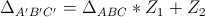

Movimentos Complexos

Rotação e Dilatação
Nas partes anteriores, você tinha restrições para os valores de Z1. Agora, você poderá movimentá-lo livremente no plano. Já o ponto Z2 permanecerá fixo na origem.
Instruções
Você poderá movimentar apenas o ponto Z1;
Os tamanhos de lados correspondentes dos triângulos e o ângulo entre as retas suportes podem ser verificados selecionando os itens desejados na lista abaixo da ferramenta;
Não se esqueça de que o triângulo móvel é obtido a partir do fixo e dos valores de Z1 e Z2 da seguinte forma:

Portanto, você pode observar que o módulo e o argumento de Z1 são os valores que determinam a dilatação e a rotação, respectivamente, quando se multiplicam vértices de figuras que estão no plano complexo.
Na próxima parte, você verá a transformação causada pela soma de um número complexo aos vértices da figura.
Corrigir todas as questões Continuar